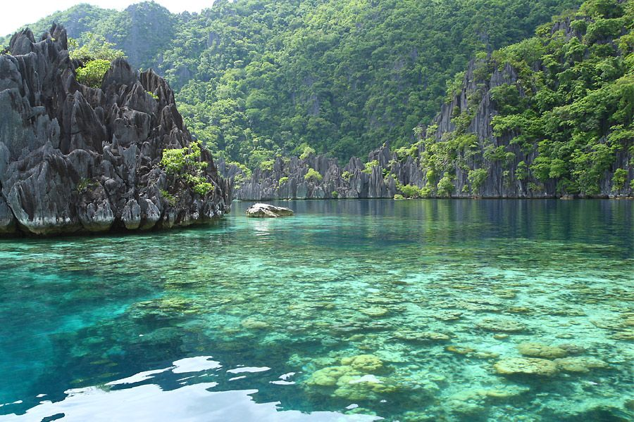

PALAWAN

Palawan is a long, narrow archipelagic province located in the westernmost region of the Philippines (MIMAROPA), stretching southwest between the South China Sea and the Sulu Sea toward the island of Borneo. It is the largest province in the country by total land area, encompassing the main Palawan Island along with roughly 1,780 surrounding islands and islets.
• Limestone Karst Landscapes: Northern Palawan—particularly El Nido and Coron—is famous for towering, jagged limestone cliffs and karst formations rising straight out of the sea. These formations create hidden lagoons, sea caves, and secluded white-sand coves.
• Underground Rivers & Caves: Central Palawan features extensive karst cave systems, most notably the Puerto Princesa Subterranean River, a UNESCO World Heritage Site featuring a navigable 8.2-kilometer underground river that flows directly into the sea.
Mountain Spine: A rugged mountain range runs along the entire length of the main island, dividing it into eastern and western coasts. The highest peak is Mount Mantalingajan in the south, reaching 2,086 meters (6,844 feet) above sea level.
Coral Reefs & Marine Biodiversity: Palawan is surrounded by some of the richest marine ecosystems in the world. It is home to the Tubbataha Reefs Natural Park in the middle of the Sulu Sea—a massive coral atoll system and UNESCO World Heritage Site—as well as historic World War II shipwrecks in Coron Bay.